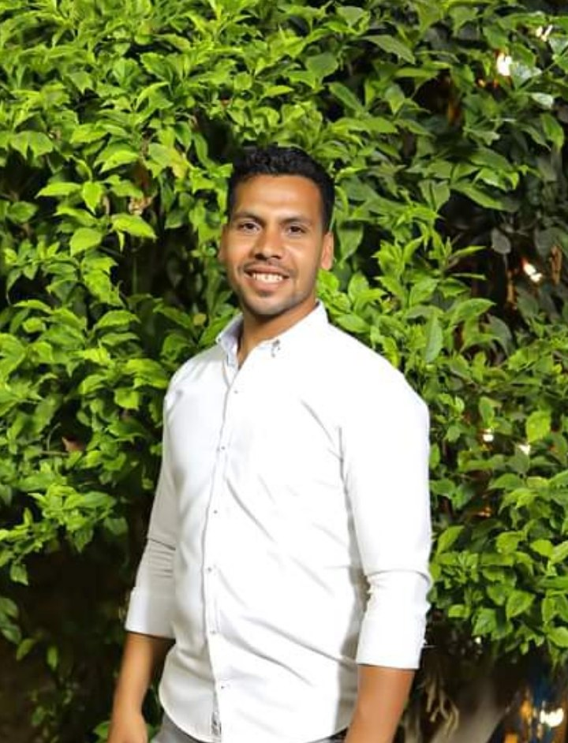

عيد رمضان خليفة Eid Ramadan Khalifa
نبذة مهنيةProfessional Summary
حاصل على ليسانس أصول الدين، وأجيد التعامل مع الحاسب الآلي، ولي خبرة سابقة في إدخال البيانات باستخدام برامج مايكروسوفت أوفيس. أتميز بسرعة التعلم والقدرة على اكتساب مهارات تقنية جديدة بيُسر، مع حرصي على التطوير المستمر لنفسي رغم عدم حصولي حتى الآن على شهادات متخصصة في مجال الحاسب الآلي.
I hold a Bachelor's degree in Islamic Theology (Usul al-Din) and am comfortable working with computers, with prior experience in data entry using Microsoft Office applications. I'm a fast learner able to pick up new technical skills with ease, and I'm committed to ongoing self-development, despite not yet holding specialized computer certifications.
الهدف المهنيCareer Goal
أتطلع إلى الانضمام لفريق عمل يمنحني فرصة لتوظيف مهاراتي في التعامل مع الحاسب الآلي وإدخال البيانات، والاستفادة من قدرتي على التعلم السريع لاكتساب مهارات تقنية جديدة، وذلك من خلال بيئة عمل مهنية تشجع على التطور والتدريب المستمر.
I'm looking to join a professional team that gives me the opportunity to put my computer and data-entry skills to use, and to build on my ability to learn quickly by picking up new technical skills, within a work environment that supports continuous growth and training.
المؤهل العلميEducation
الخبرة العمليةWork Experience
عملت لمدة عام في المملكة العربية السعودية على جهاز الحاسب الآلي ضمن إدارة بيانات بإحدى الجهات، حيث اكتسبت خبرة عملية في إدخال البيانات وتنظيمها والتعامل اليومي مع برامج الأوفيس.
I worked for one year in Saudi Arabia on a computer within a data management department, gaining hands-on experience in data entry, organization, and day-to-day use of Office applications.